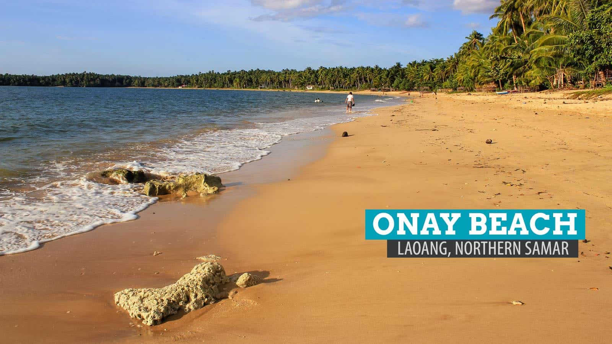
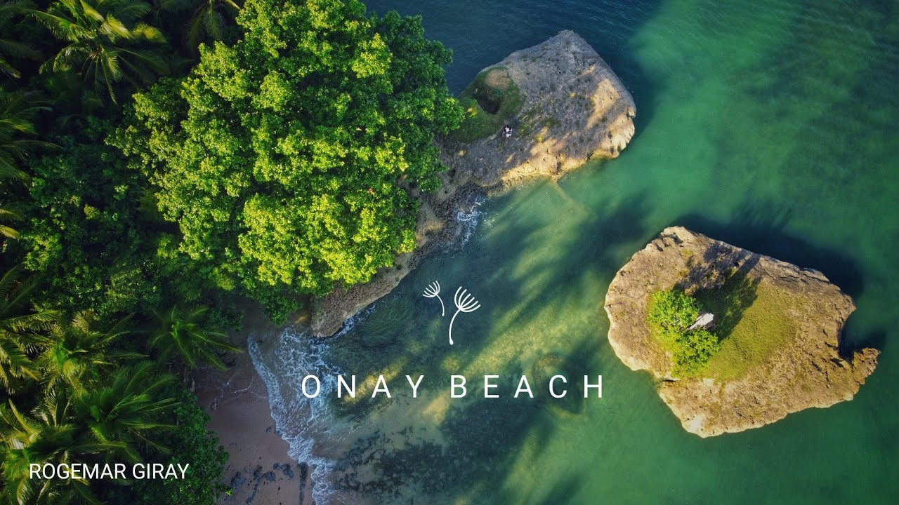

<!DOCTYPE html>
<html lang="en">
    <head>
        <meta charset="utf-8">
        <meta name="viewport" context="width=device-width, initial-scale=1">
    <title>Beach</title>
    </head>
    <body style="background: url(kj.jpg); background-attachment: fixed; background-repeat: no-repeat; background-size: cover;"></body>
    
    <h1>  <center> <font face="cooper black"  size="7" color="yellow" > 
        Onay Beach</font>
    </h1>
        <center>
        <br>
        <center>
    <h3>
        <center>
        <font face="Century Gothic" size="4" color="white">
            Welcome to Onay Beach, If you want to relax you must visit the beautiful Onay Beach located in the municipality of Laoang.
            <br>
            Brgy. Onay (Doña Luisa), this golden beach is the most popular swimming spot in the island of laoang.
        </font>
        <br><br>
        
        <br>
        <font face="Century Gothic" size="4" color="white">And watch the beautiful Sunset in Laoang.</font>

        </center>
    </h3> 
        


</body>
</html>